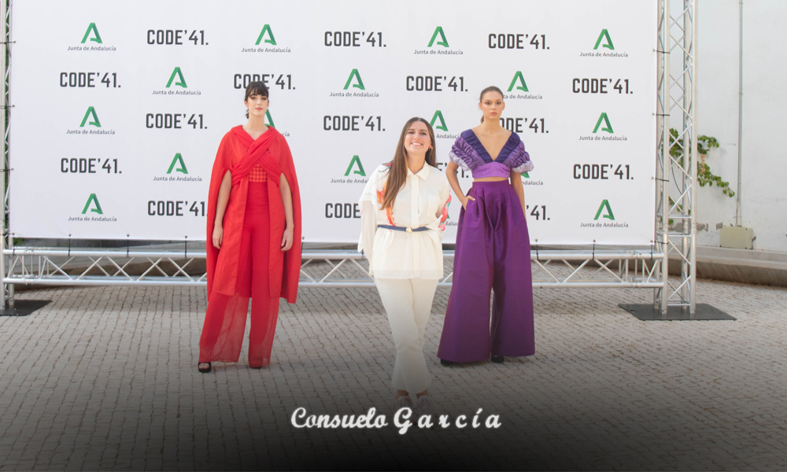

2020
Debut de la colección MAGNANIMITY 20.20
Presentamos nuestra primera colección, una celebración del color, la forma y la artesanía sevillana. Una oda a la alegría en tiempos difíciles.
Leer más →
ImagenConsuelo García Atelier gana el premio Code 41, un reconocimiento que pone en valor la moda artesanal española y el trabajo de las costureras de Utrera.
Leer más
Presentamos nuestra primera colección, una celebración del color, la forma y la artesanía sevillana. Una oda a la alegría en tiempos difíciles.
Leer más →
Ya puedes descubrir y contactar con nosotros para adquirir nuestras piezas desde cualquier lugar del mundo.
Leer más →